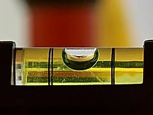
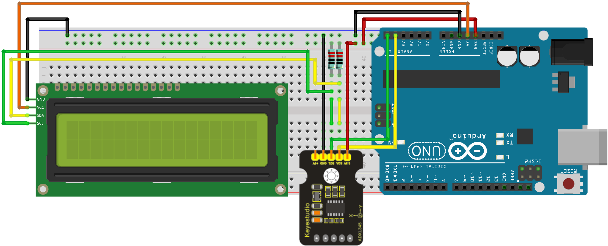

Use an accelerometer to build a level

Know it
To build our bubble level we will be using an ADXL345 accelerometer. This can be used to know if a surface (say, table) is horizontal or not. Well, that one simple usage of it! ADXL345 can give us the orientation in the 3 dimensions by measuring the acceleration. This means you can use it to know the orientation of your robot or whatever huge project that you can think about. But for the sake of example, we will be building a simple bubble level here.
An LCD screen is used here to display the readings and show a bubble to look closer to a real level (in the x-axis only..) for extra fanciness.
Wire it
The LCD screen we're using here is a 16x2 character display with an I2C driver like the one HERE and the ADXL345 also uses I2C interface. For this reason both, the LCD and the ADXL345 will be connected to the same pins on the Arduino with the small addition of two 10KΩ (pull-up) resistors. This is possible because I2C data line (SDA) works like bus. More than one component can use the same line. However, every component must have an address (you can see that in the code). The SCL line is just a clock to let components know when to send and receive data (synchronize).Enough talking about I2C! Let's wire things up, you'll need:
- ADXL345 accelerometer
- 16x2 LCD with I2C driver
- Jumper wires and Breadboard
- Arduino board and USB connector

Connections from the LCD I2C driver:
- LCD GND → Breadboard ground line
- LCD Vcc → Arduino pin 5V
- LCD SDA → Breadboard SDA line
- LCD SCL → Breadboard SCL line
Connections from ADXL345:
- ADXL345 GND → Breadboard ground line
- ADXL345 Vc → Breadboard 3.3V line
- ADXL345 SDA → Breadboard SDA line
- ADXL345 SCL → Breadboard SCL line
Connections from the Arduino to the breadboard:
- Arduino pin GND → Breadboard ground line
- Arduino pin 3.3V → Breadboard 3.3V line
- Arduino pin A4 → Breadboard SDA line
- Arduino pin A5 → Breadboard SCL line
Resistors connections:
- 1st 10K resistor → Between Breadboard SDA line and 3.3V line
- 2nd 10K resistor → Between Breadboard SCL line and 3.3V line
Code it
/*
Level using accelerometer
Tutorial link: https://www.learn.voltaat.com/post/use-an-accelerometer-to-build-a-level
This is an Arduino sketch that simulates a level using an ADXL345 accelerometer and displaying it on an LCD screen
Components Needed:
1. ADXL345 ........x1
2. LCD screen .....x1
3. 10K resistor ...x2
Connections:
LCD GND → Breadboard ground line
LCD Vcc → Arduino pin 5V
LCD SDA → Breadboard SDA line
LCD SCL → Breadboard SCL line
ADXL345 GND → Breadboard ground line
ADXL345 Vcc → Breadboard 3.3V line
ADXL345 SDA → Breadboard SDA line
ADXL345 SCL → Breadboard SCL line
Arduino pin GND → Breadboard ground line
Arduino pin 3.3V → Breadboard 3.3V line
Arduino pin A4 → Breadboard SDA line
Arduino pin A5 → Breadboard SCL line
1st 10K resistor → Between Breadboard SDA line and 3.3V line
2nd 10K resistor → Between Breadboard SCL line and 3.3V line
*/
#include <Wire.h> // I2C library
#include <Adafruit_Sensor.h> // Adafruit sensor library
#include <Adafruit_ADXL345_U.h> // ADXL345 Adafruit's library
#include <LiquidCrystal_I2C.h> // LCD library
// ADXL345 instance (12345 is the I2C address)
Adafruit_ADXL345_Unified accel = Adafruit_ADXL345_Unified(12345);
// LCD instance (0x27 is the I2C address)
LiquidCrystal_I2C lcd(0x27, 16, 2);
// Commands inside void setup run once
void setup() {
Serial.begin(9600); // Start the serial monitor
lcd.init(); // Initialize the LCD screen
lcd.backlight(); // Turn on backlight on the LCD
// Initialise the sensor
if(!accel.begin()) {
// There was a problem detecting the ADXL345 ... check your connections
Serial.println("Ooops, no ADXL345 detected ... Check your wiring!");
lcd.clear();
lcd.setCursor(0, 0);
lcd.print("Sensor error");
while(1);
}
// Set the range to whatever is appropriate for your project
// Uncomment the needed line
accel.setRange(ADXL345_RANGE_16_G);
// accel.setRange(ADXL345_RANGE_8_G);
// accel.setRange(ADXL345_RANGE_4_G);
// accel.setRange(ADXL345_RANGE_2_G);
}
// Commands inside void loop run forever
void loop() {
// Get a new sensor event
sensors_event_t event;
accel.getEvent(&event);
// Print to serial monitor (acceleration is measured in m/s^2)
Serial.print("X: "); Serial.print(event.acceleration.x);
Serial.print(", Y: "); Serial.print(event.acceleration.y);
Serial.print(", Z: "); Serial.print(event.acceleration.z);
Serial.println(" m/s^2 ");
// Calculate the bubble location on the screen
// One row on the LCD is 16 characters. But we use only 15 to get
// an odd number for the center value. The x-axis range between
// -10 and 10. With basic math, we get the following
int bubble = round(15 - (((event.acceleration.x + 10) / 20.0) * 15));
if (bubble < 0) bubble = 0;
if (bubble > 14) bubble = 14;
// Print the bubble
lcd.setCursor(0, 0);
for (int i = 0; i < 16; ++i) {
if (i == bubble) {
lcd.print('o');
} else if (i == 5 || i == 9) {
lcd.print('|');
} else {
lcd.print(' ');
}
}
// Pretty-print axes to the LCD
char buf[17];
sprintf(buf, "X:%02d Y:%02d Z:%02d",
(int) event.acceleration.x,
(int) event.acceleration.y,
(int) event.acceleration.z);
lcd.setCursor(0, 1);
lcd.print(buf);
// Wait for 0.1 second
delay(100);
}